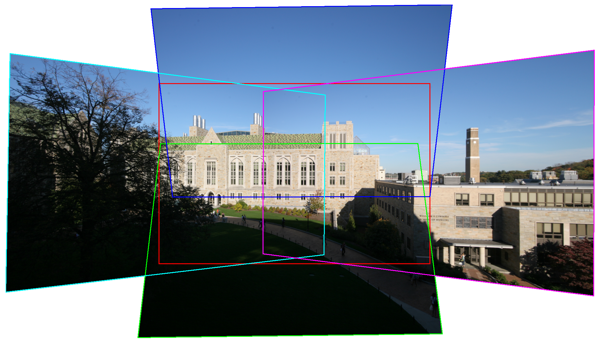
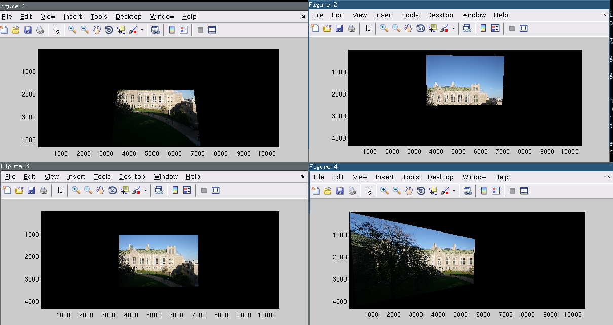

Mosaic of 5 images aligned with homographies (from David Martin)
In this assignment, you will extend the field of view of a camera by forming a
mosaic from multiple photographs.
When images are taken with same optical center, they can be aligned with a
homography transformation. To estimate the homography, you'll need at least
4 pairs of corresponding points in the overlap region. You'll mark these points
manually. In a future lecture we will discuss some methods for finding them
automatically.
The following directory contains the source images for alignment, along with
some code to get started.
You do not have to use my code, it is just for inspiration.
Programming: [80 points]
-
Warping: [35 points]
The first image in each example provided is the central image. It's simplest
to construct a mosaic from a central image and a set of peripheral images,
since we then need to find just one homography for each peripheral image. Use
MATLABs cpselect and cpcorr functions to manually select and
refine at least 4 pairs of corresponding points in each overlap region between
the central and peripheral images. These points should be located on
distinctive locations that you can easily identify between the images such as
high contrast corners.
Next, compute the homography using linear least squares for each set of
correspondences to provide the mapping from points in the central images and
points in the peripheral images. I suggest you write two functions to do
this. One which estimates the transformation matrix H given pairs of points
and another which applies the transformation to a set of points.
function [H] = computeHomography(x1,y1,x2,y2)
function [x2,y2] = applyHomography(H,x1,y1)
Note that if the matrix H maps (x1,y1) to (x2,y2), then the inverse
mapping is given simply by inverting the matrix. So applying the homography
inv(H) will map (x2,y2) back to (x1,y1).
We will use the central image's coordinate system for the final mosaic. You
first need to figure out how big the final mosiac will be. You can accomplish
this by determining where the corners of each source image will be mapped to in
the final mosaic (using your applyHomography function) and then use min/max to
determine the left-most, right-most, top-most and bottom-most points across all
of the warped images. After this step you will have determined that all the
warped image pixels from all the images will fall inside some rectangular region
(xmin,ymin)-(xmax,ymax). Note that these coordinates will with respect to your
central image. For example, xmin will be a negative value if some of the images
in your mosaic are mapped to the left of your central image.
Generate the coordinates of all the pixels for you final mosaic (I suggest
using meshgrid). In order to determine the color for each of these
pixels, you should first apply the inverse of each homography in order to
determine their coordinates with respect to the original source images. You
can then use the interp2 to extract the color values for the pixels
from the source image. For each source image, this will result in an image the
size of the final mosaic containing the warped version. interp2 will
set the value of any pixels that are outside the source image to
NaN.
NOTE: If you are running into memory limits, you should downsample the images
when you load them in (use imresize) to make things more manageable
and run faster.
The figure below shows examples of warped images. Note that the black pixels
were mapped outside the source image. interp2 will fill in NaN for those
pixels. After warping I replaced these values with zeros in order to display
the warped images using the following bit of code:
mask = ~isnan(Iwarped);
Iwarped(~mask) = 0;

Examples of individual images after they have been warped but
prior to being blended together.
-
Blending: [35 points]
Now that you have generated the individual warped images, we need to blend
them together into the final mosaic image. Use isnan(I) to get a mask
for each one that tells you which pixels are valid and which are invalid.
The simplest approach is to paste down the pixels from each image in turn.
However, as we discussed in class this can lead to bad artifacts. Instead you
should create a smooth blend between the images in the regions where they
overlap. To receive full credit, you must implement some type of weighted
blending.
To create a blend, first compute a alpha mask for each image which is the same
size as the target output with 1s where you have values from that image (i.e.
using the isnan(I) trick). In order to feather the edges of the mask, you can
blur them with a Gaussian filter. I suggest using imfilter and
fspecial. Since more than one image can overlap at a given location,
you will need to normalize these alpha maps by the sum of the alphas across all
images at that location.
To create the Gaussian filter, fspecial takes two arguments, the
size of the returned filter, and sigma, the width of the Gaussian.
You will need to experiment with the parameter sigma in order to get good
featering of the edges. As you make sigma larger, you will also need to
increase the size of the filter itself to match so that the Gaussian doesn't
get cut off.
NOTE: If you simply blur the binary alpha mask for an image, you will will end
up with non-zero values outside of the support of a warped image which will
cause problems when you composite them (e.g., black bands around the edge of the
image). To get a good result, you will need to find a way to fix this so that
the alpha is non-zero only where you actually have color values for a given
warped image.
Your submission should contain a top-level script named hw2.m that
carries out the complete process along with any other functions you have
written.
-
Bonus round, 2-band blending: [10 points]
Implement a verion of 2-band blending as described in class.
You should only work on this once you've finished the previous part of the
assignment. You should submit your final code for this part in a new script
named hw2_2band.m which can be run independently of the previous
script.
As we described in class, 2-band blending involves splitting the image into two
frequency bands, low frequencies (given by blurring the image with a large
gaussian) and the remaining higher frequencies (subtract the blurred from the
original). The high frequency images can be blended using the non-blurred
(binary) alpha mask. The low frequency images are blended using a feathered
alpha mask just like you used for part 2.
Writeup: [20 points]
Submit a PDF file that contains the following items:
- Show the final mosaic for one of the provided example image sets.
Also show the individual remapped source images after they are warped but
before they are blended together into the final mosaic (as in the figure above).
If you have limited memory, you should downsample the images when you load them
in (use imresize).
- Show two mosaics of your own creation, each with at least 3 source
images. You should use your own camera to take images. Remember that you
want to keep the camera center in the same location and simply rotate
the camera. For your writeup, show also the remapped source images before they
are blended into each final mosaic.
- Finally, show the results of your 2-band blending by testing it on one
of the 3 mosaics you used in the previous section of the writeup. Show the
whole blended mosaic as well as a side-by-side comparison (with and without
2-band blending) where you zoom in on an overlap region of the mosaic. Choose
a region that shows the benefit of the blending (e.g. less apparent
ghosting/blurring due to misalignment)
To submit
Your submission for this assignment should consist of two files:
- writeup firstname_lastname.pdf in pdf format containing results and discussion for all
parts of the assignment
- a zip file firstname_lastname.zip containing:
- a script hw2.m with code for parts 1 and 2 using one of the example image sets.
- a script hw2_2band.m which contains an version that does 2 band blending.
- any other functions you write which are called by your script.
Please do not include the input images. We will test your code on the example image sets.
Matlab Tips
- Don't forget the hold on command if you want to
plot one thing on top of another. For example, if you display an image, you can
use hold on; and plot(..,..,'r.') to visualize the points you
clicked overlayed on top of the image.
- Running cpselect is a pain. Don't do it more than
once for any pair of images! You can use the save and
load functions to save and restore variables from your
MATLAB workspace.
- I would suggest not using the full size images. Resize them down so
that your debugging goes faster. For your final results, 25% size is
sufficient.
- You can treat the central image the same as every other image by using
a 3x3 identity matrix as the homography.
Extra-credit
As detailed in the guidelines, any
project handed by 11:59 pm on the previous day will receive 5%
extra credit.
|
{kind=link}
{kind=link}